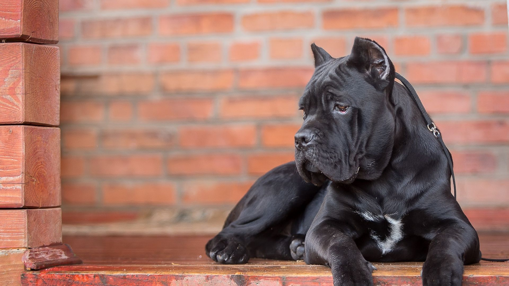
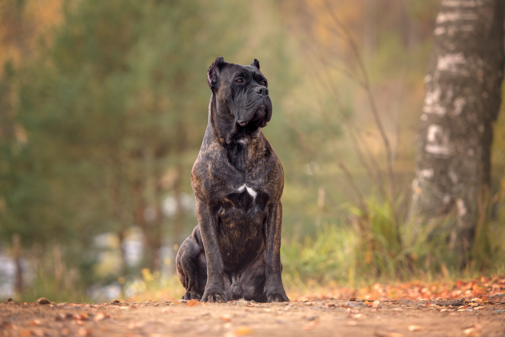
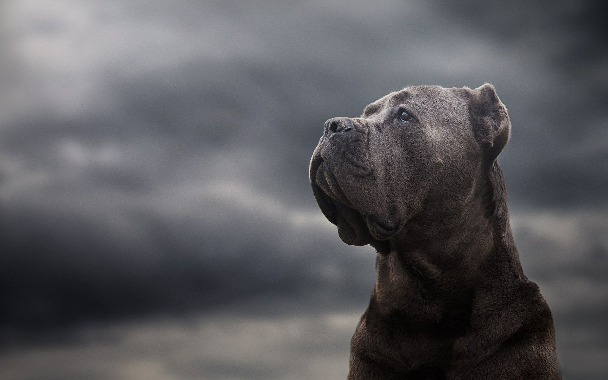

Cane Corso

origin
Italy
size
Large
color
Black
type
Purebred
breed group
Working (AKC:2010), Guardian Dogs (UKC)
character
Best guard
temperament
Cheerful, Courageous, Loyal, Quiet, Social
height
24-27 inches (64-68 cm)
weight
99-110 pounds (45-50 kg)
geography
Europe
overview
The Cane Corso also known as the Italian Mastiff, is a large Italian breed of dog, for years valued highly in Italy as a companion, Guard dog and hunter.
Intelligent, the Cane Corso is easily trained. As a large and athletic breed, they need a lot of exercise. For this breed to be a well-balanced member of society, he needs extensive socialization and training from an early age. He does not do well crated all day and should have a fenced in yard for adequate exercise. They are affectionate to their owner and bond closely with children and family. The Corso requires substantial time invested and owners with an understanding of dog hierarchy.
history
The Cane Corso Italiano (also known as the ‘Italian Mastiff’ or ‘Cane Corso Mastiff’) is a war and hunting dog which originated in southern Italy. It likely descends from the Neapolitan mastiff and the Roman ‘Canis Pugnax’, a powerful war dog, though the Cane Corso Italiano is a lighter, more agile breed which was used by troops for hunting or as an auxiliary force (‘Corso’ comes from the Latin for ‘guardian’). The Cane Corso Italiano was also used in bull baiting, a gambling ‘sport’ wherein one or more dogs were matched up against a chained bull. The Cane Corso Italiano had declined to near extinction by the 1980’s, but since then an intentional effort to rescue the breed has increased the dog’s numbers substantially. It is most prominent in southern Italy.
Photo Gallery


